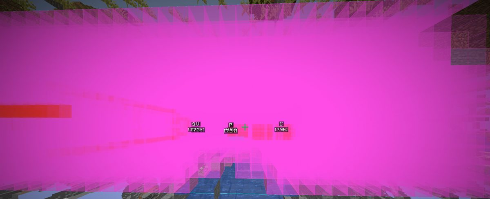
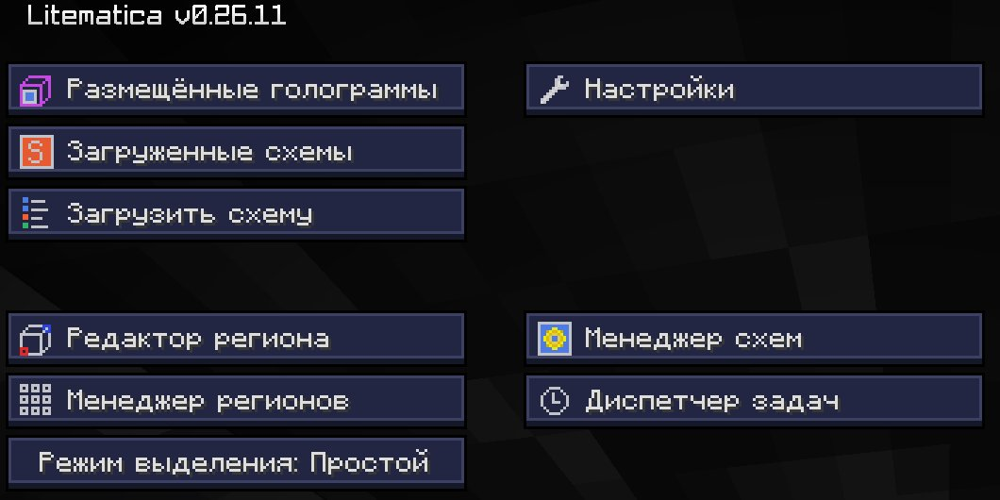
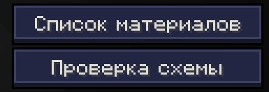

Выкопать розовую зону
Ты поставил схему в Litematica, а вокруг всё розовое. Значит, на этом месте в схеме воздух, а в мире стоят блоки. Их надо убрать. Руками это часы работы, бот сделает сам.
Что значат цвета Litematica

| Цвет | Что это | Что делать |
|---|---|---|
| Розовый | Лишний блок | Сломать |
| Красный | Не тот блок | Сломать и поставить правильный |
| Жёлтый | Не тот поворот или состояние | Переставить |
| Голубой | Блока не хватает | Поставить |
Где в Litematica смотреть


Способ 1: выделить и выкопать
Первый угол
Встань ногами в нижний угол розовой зоны и напиши
#sel 1.Второй угол
Встань в противоположный верхний угол и напиши
#sel 2.Проверь рамку
В мире появится рамка. Она должна совпадать с розовой зоной.
Запусти
Напиши
#sel cleararea. Бот начнёт копать.
Углы можно задать и без хождения, сразу координатами. Возьми их в «Настроить» у своей схемы:
Способ 2: строить прямо по схеме
Команда #litematica берёт загруженную схему и строит её. Лишние блоки бот ломает сам. Если в схеме есть блоки, которые надо поставить, они должны быть у тебя в инвентаре, иначе бот остановится.
Подготовка перед запуском
- Кирка, лопата и топор в хотбаре. Бот сам переключает инструмент под блок.
- Еда и свободный инвентарь. Большая зона копается долго.
- Немного булыжника или земли: бот ставит блоки, чтобы подниматься.
- Если рядом лава, засыпь то, что видишь. Бот её обходит, но лучше подстраховаться.
| Команда | Что делает |
|---|---|
#pause | Пауза |
#resume | Продолжить |
#stop | Остановить всё |
#proc | Чем бот сейчас занят |
#sel clear | Убрать рамку выделения |
Если появляются мобы
Baritone не дерётся. Он продолжает копать, а моб бьёт тебя в спину. Поэтому:
- Освети зону факелами перед стартом. На свету мобы не спавнятся, это самое надёжное.
- Включи
#set avoidance true: бот старается обходить мобов и спаунеры. - Надень броню и возьми еду. Бот ест сам, когда голоден.
- Не уходи далеко от компьютера. Напал моб —
#pause, разберись с ним, потом#resume. - Копай днём. Крипер может взорвать и тебя, и часть зоны.
- В одиночном мире можно просто поставить сложность «Мирная».
Без мода, но быстро
Если на сервере Baritone запрещён: кирка с Эффективностью V и эффект Спешка II от маяка ломают обычный камень мгновенно. Держишь ЛКМ и водишь мышкой. Глубинный сланец так не ломается.